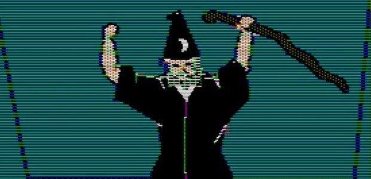
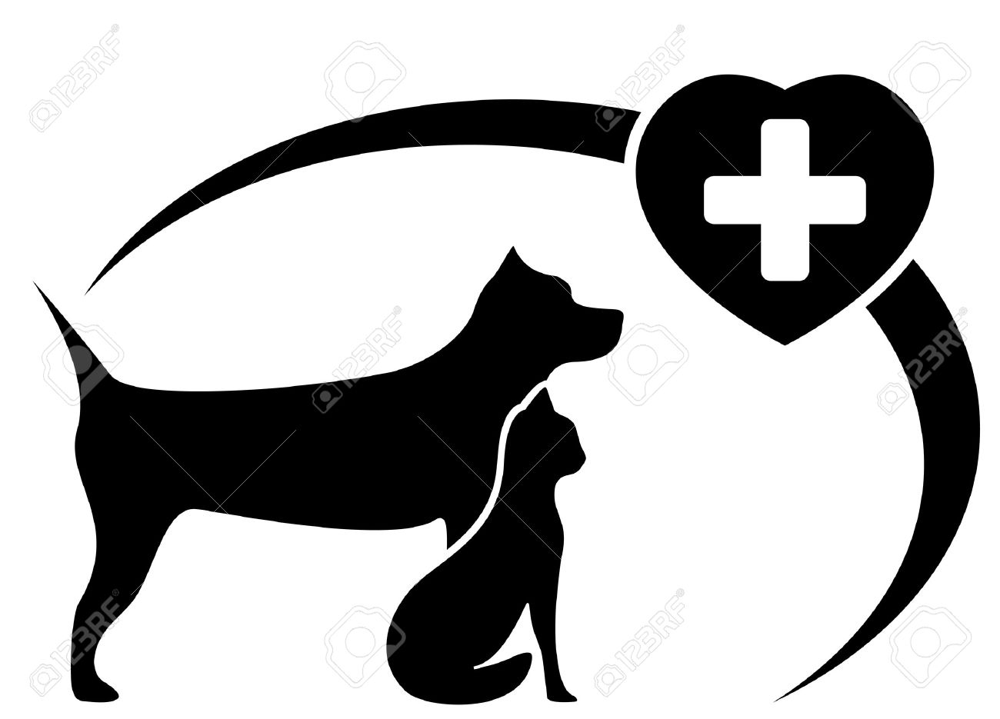
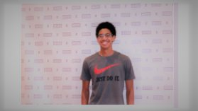

Created By Sol Diawara
This Is My Website,
Thanks For Coming!
About Me
I have been swimming for about three months now, I have grown exponentially well over this short period of time and enjoy swimming at recreational pools, and outdoor swimming pools. I have been designing websites for about six months now, with practice I have improved and my craft has gotten better and better with more time invested. I hope to one day be able to profit off of my skill and make a steady income. Graphic design is also another interest that I am particularly fond of, you can find all of my artwork at Art -3000 under the username “offbeat27” I prefer to stick to a cartoon level on graphic creation but I'm familiar with adobe photoshop and other photo editing softwares. I also enjoy Creative writing,it is very close to my heart because it is limited by only the mind, it allows me to express my emotions and thoughts in a physical way that is relaxing and interesting to others. I am currently a member of a writing club that goes by “Word Play.” I am planning to perform in front of a large audience soon and introduce some of my works. Music Production is another skill that i've picked up, spawning from an interesting talk with a friend, I bought a Digital Audio Workstation and a keyboard so I could produce musical instrumentals.
| My Interest | My Goals | My Accomplishments |
|---|---|---|
| Music Production,Sports,Education, | Medical School? Programming? | Website,School,Extracurricals |
|  |  |